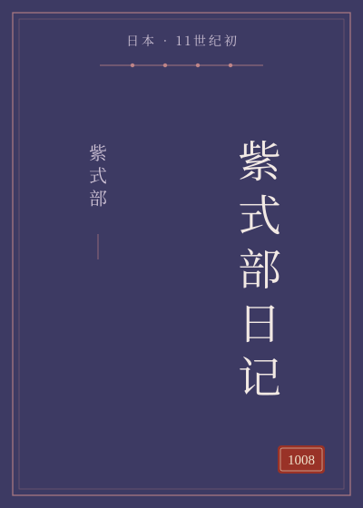
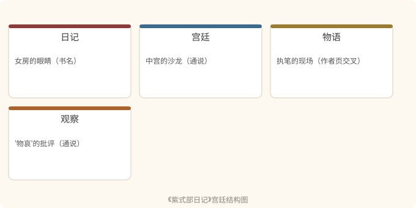

紫式部日记
一、基本信息
| 作者 | 紫式部 |
|---|---|
| 成书/出版 | 作者页注记：Britannica——紫式部日记（Diaries of Court Ladies of Old Japan 1935 英译——写于约1008-1010说通说待核） The Tale of Genji — Encyclopaedia Britannica（百科全书） |
| 国别/地区 | 日本 |
| 时代 | 古代 · 11世纪初 |
| 体裁 | 日记 |
| 语言 | 日语 |

《紫式部日记》宫廷结构图（主题·结构图）
二、创作背景
作者页注记：紫式部日记——'（Britannica：Diaries of Court Ladies of Old Japan 1935 英译）'。
Britannica：紫式部——《源氏物语》作者（作者页交叉）。
题材（通说待核）：宫廷女官日记——中宫彰子的沙龙与'物哀'的观察。
三、内容脉络
（通说待核）四段日记（存目）：宫廷记事与《源氏》的执笔。
（通说待核）'夜半的宫中'与女房们的评论。
四、主要人物表
| 人物 | 身份 | 说明 |
|---|---|---|
| 紫式部 | 女官/作家 | （作者页交叉） |
五、主题与艺术特点
- 宫廷的女房文化（通说待核）。
- '日记'与'物语'的互文（通说待核）。
- 《源氏物语》的创作现场（作者页交叉）。
六、影响与评论
- Britannica：Diaries of Court Ladies of Old Japan (1935英译)（作者页注记）。
The Tale of Genji — Encyclopaedia Britannica（百科全书） - Britannica：《源氏物语》为代表作（作者页交叉）。
The Tale of Genji — Encyclopaedia Britannica（百科全书）
七、阅读建议
难点
- 平安朝宫廷语。
- 日记的残存结构。
- 《紫式部日记》中译本（人民文学等——通说待核）。
- 日文原版（公有领域）。
《源氏物语》的伴读。
八、待核实
- 存世段落结构核对（通说）。
- 约1008-1010写作年份待核。
- 1935年英译本细节待核。